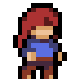

Eu sou o Arthur e atualmente tenho 15 anos. Entrei para o IF no curso de "info" pois sempre gostei bastante de mexer com :~$ programação. Agora não tenho muitos projetos no github (tenho literalmente 1 projeto '-'), mas futuramente quero fazer mais jogos simples de CLI para aprender mais sobre python. Tenho um scratch com um projeto "divertido" que fiz com meu amigo, o Danilo "MESTRE do scratch" Stefen. Gosto de jogar celeste, towerfall, minecraft (num servidor bem legal) e alguns outros jogos. CONTATOS: arge@gmail.com - @estilinguedo (no discord)
